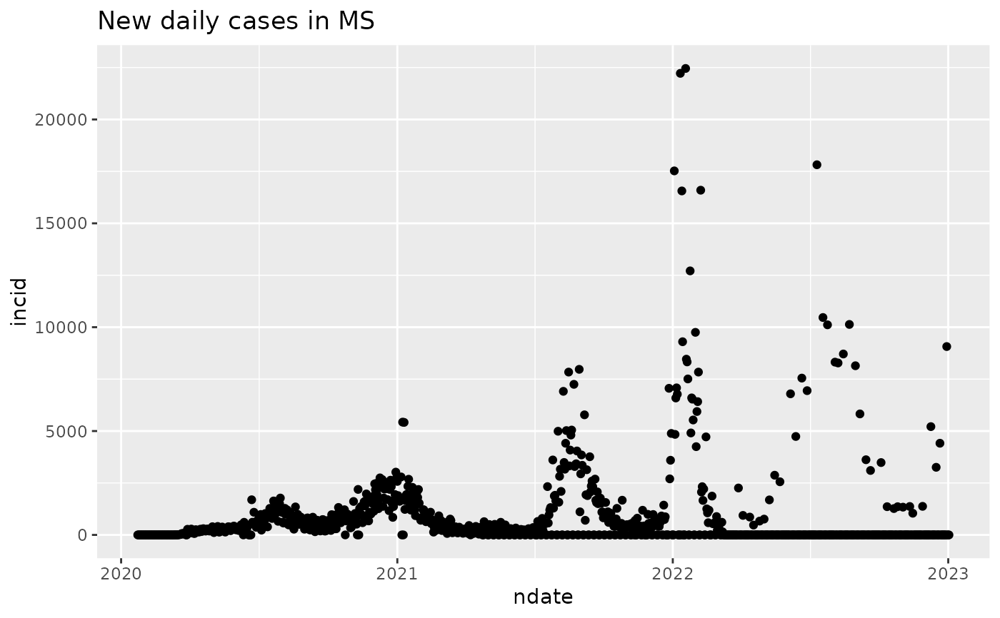

get confirmed COVID-19 cases from USAfacts.org
Arguments
- update
logical(1) if TRUE will download the data, otherwise use (or populate then use) cache
Examples
cc = usafacts_confirmed() # confirmed cases by county
library(dplyr)
MSdata = cc |> filter(State=="MS")
head(MSdata[,1:10])
#> countyFIPS County Name State StateFIPS 2020-01-22 2020-01-23
#> 1 0 Statewide Unallocated MS 28 0 0
#> 2 28001 Adams County MS 28 0 0
#> 3 28003 Alcorn County MS 28 0 0
#> 4 28005 Amite County MS 28 0 0
#> 5 28007 Attala County MS 28 0 0
#> 6 28009 Benton County MS 28 0 0
#> 2020-01-24 2020-01-25 2020-01-26 2020-01-27
#> 1 0 0 0 0
#> 2 0 0 0 0
#> 3 0 0 0 0
#> 4 0 0 0 0
#> 5 0 0 0 0
#> 6 0 0 0 0
dates = lubridate::as_date(names(MSdata[-c(1:4)]))
cumulative = apply(MSdata[,-c(1:4)],2,sum)
library(ggplot2)
mydf1 = data.frame(cumulative, dates)
ggplot(mydf1, aes(x=dates, y=cumulative)) + geom_point() + ggtitle("Cumulative Confirmed Covid cases in MS")
incid = diff(cumulative)
ndate = dates[-1]
mydf2 = data.frame(incid, ndate)
ggplot(mydf2, aes(x=ndate, y=incid)) + geom_point() + ggtitle("New daily cases in MS")
